Eight approved replacements now integrated into the compact mansion, plus one future bar concept. Foyer remains unchanged. Door labels are separate overlays; runtime art has no text.
The current game uses the approved replacement backgrounds and updated door/stair collision. Furniture tags remain provisional; Char has four approved library seat fits. Other staging/masks need calibration.
3 openings — NORTH: 1 · EAST: 0 · SOUTH: 1 · WEST: 1 · ART APPROVED / FIT PENDING
Current reference
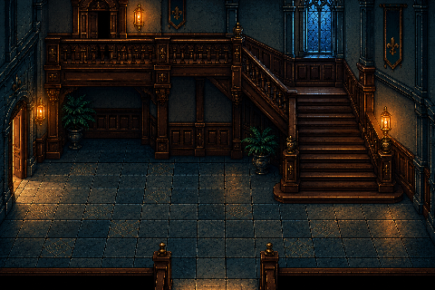
New candidate — g_main_stair_n1_e0_s1_w1_draft_v1.png
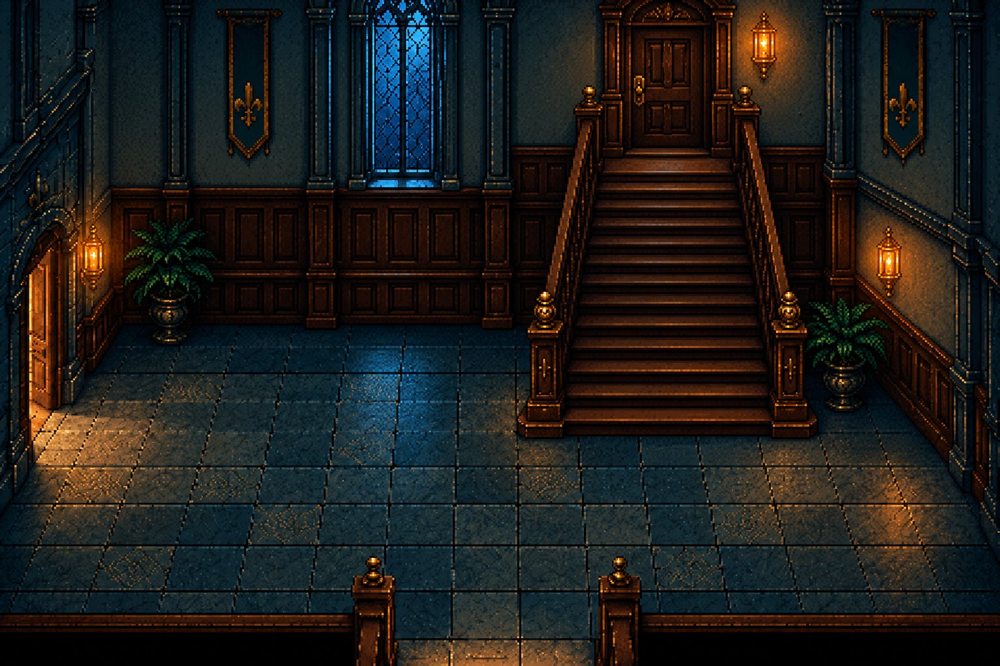
Room requirements and exact generation prompt
Replace the twisting/returning staircase with ONE STRAIGHT flight, seen head-on, rising directly toward a CLOSED WOODEN DOOR on the north/back wall. Place the flight on the right half of the room; its foot and the top door share exactly the same vertical centerline. Treads ascend straight away from the viewer with parallel side rails; no bend, no corner, no side flight, no wrapping balcony. The top tread meets a small flat landing directly against the door threshold; no stair treads disappearing behind a wall. Exactly THREE route openings: the upstairs door at the top of that straight north staircase, one west/left doorway to the library, and one centered south/bottom foreground threshold to the foyer. Remove the obsolete separate balcony door. No east doorway. Keep a readable lower floor connecting the west door and south threshold to the stair foot. Simple wall paneling, a clear window off the stair axis, restrained sconces.
Use case: precise-object-edit. Produce ONE opaque 3:2 landscape background draft for a 2D Victorian mansion mystery game, ideally 1536x1024. The first reference is the edit target; preserve its illustrated pixel-art rendering, dark walnut, teal/slate stone and moonlit windows, brass and warm candlelight, crisp grouped pixel clusters and restrained material texture. Fixed elevated three-quarter orthographic cutaway room, horizontal back-wall lines, consistent depth, no wide-angle distortion or photographic/3D rendering. Readable adult-scale furniture in separate coherent functional clusters, clear paths and approach space. No characters, UI, text, compass labels, borders, floor arrows, bodies or baked evidence. No extra door-like arches, no melted ornament or fused furniture. Labels and contact metadata will be separate. This is a review candidate, not a runtime replacement.
ROOM: g_main_stair
Replace the twisting/returning staircase with ONE STRAIGHT flight, seen head-on, rising directly toward a CLOSED WOODEN DOOR on the north/back wall. Place the flight on the right half of the room; its foot and the top door share exactly the same vertical centerline. Treads ascend straight away from the viewer with parallel side rails; no bend, no corner, no side flight, no wrapping balcony. The top tread meets a small flat landing directly against the door threshold; no stair treads disappearing behind a wall. Exactly THREE route openings: the upstairs door at the top of that straight north staircase, one west/left doorway to the library, and one centered south/bottom foreground threshold to the foyer. Remove the obsolete separate balcony door. No east doorway. Keep a readable lower floor connecting the west door and south threshold to the stair foot. Simple wall paneling, a clear window off the stair axis, restrained sconces.
Furniture IDs, contact landmarks, collision and occlusion are not calibrated for this draft. Door count is visually reviewed; final usability awaits game integration.
One straight flight to the north door; west library doorway and south foyer threshold. The new stair axis requires new trigger/arrival coordinates.
g_library — Library with larger adult-scale reading chairs
2 openings — NORTH: 0 · EAST: 1 · SOUTH: 1 · WEST: 0 · ART APPROVED / FIT PENDING
Current reference
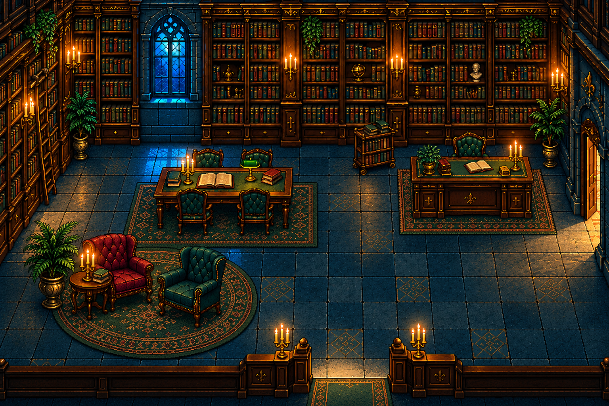
New candidate — g_library_n0_e1_s1_w0_draft_v3.png
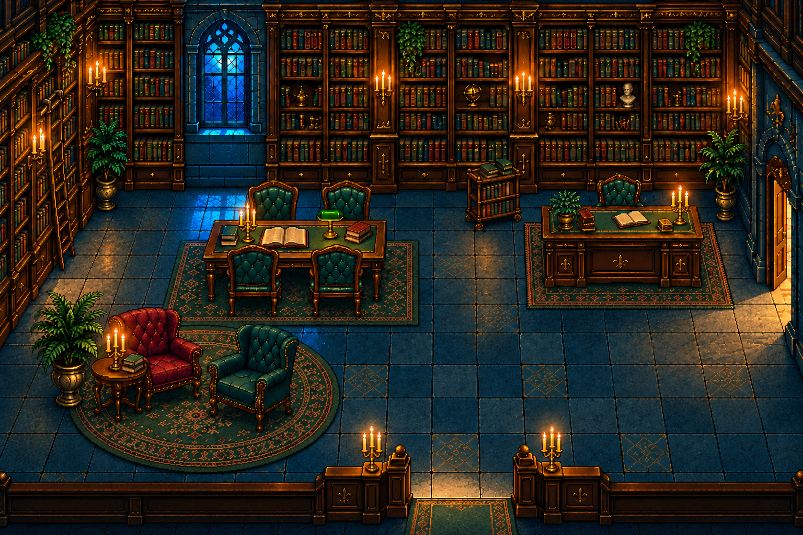
Room requirements and exact generation prompt
Enlarge the four reading-table chairs approximately 20–25 percent; preserve the east/south doors, west shelves and room composition. Char seat-contact fit remains untested.
Precise local edit of the provided pixel-art Victorian library. Keep the exact 1536x1024 landscape composition, east/right door, south/bottom entrance, west bookshelves, north window, all architecture, table position and size, desk, armchairs, rugs, book cart, lighting and pixel-art rendering unchanged as closely as possible. Change ONLY the FOUR small green upholstered wooden chairs around the rectangular reading table at center-left. They currently look miniature. Enlarge their usable seats and overall chair bodies by approximately 20–25 percent to believable adult scale, comparable to the green desk chair at right, while preserving ordinary slender wooden reading-chair designs (not bulky armchairs). Two chairs behind the table facing the viewer, two in front facing away. Make their seat surfaces wide enough for an adult pelvis, correct legs reaching the floor, consistent seat heights relative to the unchanged tabletop. Preserve all four chairs individually with correct perspective and chair/table occlusion; rear chair lower portions can naturally be hidden by tabletop. Chair backs should rise clearly above table when appropriate, front chair seats and legs readable. Keep adequate separation between adjacent chairs and do not fuse legs into table legs. Do not enlarge the table or redesign the rest of the room. Keep right-side walking lane and south entrance clear. No characters, labels, arrows, borders or UI. Crisp detailed illustrated pixel art, not photographic.
Furniture IDs, contact landmarks, collision and occlusion are not calibrated for this draft. Door count is visually reviewed; final usability awaits game integration.
g_dining — Dining room with a real table
2 openings — NORTH: 0 · EAST: 1 · SOUTH: 0 · WEST: 1 · ART APPROVED / FIT PENDING
Current reference
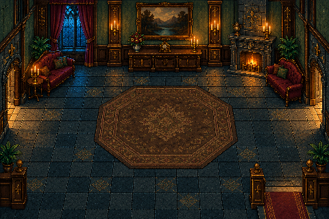
New candidate — g_dining_n0_e1_s0_w1_draft_v1.png
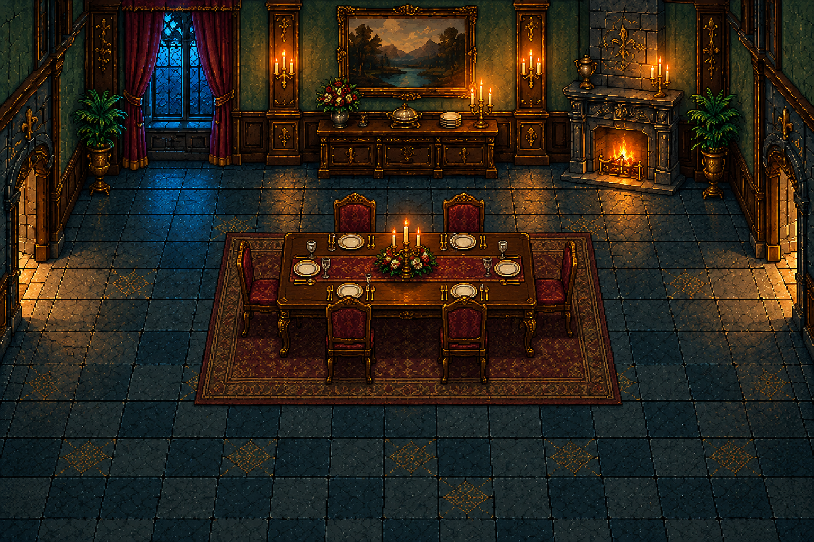
Room requirements and exact generation prompt
Make this a true formal dining room. Exactly TWO doorways, WEST and EAST. Remove the unused lower/south exit and its railing-gap/runner; bottom edge is continuous room floor, not a passage. Place one elegant adult-sized rectangular dining table oriented horizontally, with SIX clearly separate dining chairs: two along its north side, two along south side, one at each short end. Chairs must have readable seats/backs/legs and logical directions facing the table; not fused into tabletop. Leave a generous walkable ring around the table and clear west/east doorway approaches. Sideboard against solid north wall, modest table setting and candle centerpiece, no sofas or bar. Keep window and fireplace separate from furniture; avoid blocking readable chair silhouettes.
Use case: precise-object-edit. Produce ONE opaque 3:2 landscape background draft for a 2D Victorian mansion mystery game, ideally 1536x1024. The first reference is the edit target; preserve its illustrated pixel-art rendering, dark walnut, teal/slate stone and moonlit windows, brass and warm candlelight, crisp grouped pixel clusters and restrained material texture. Fixed elevated three-quarter orthographic cutaway room, horizontal back-wall lines, consistent depth, no wide-angle distortion or photographic/3D rendering. Readable adult-scale furniture in separate coherent functional clusters, clear paths and approach space. No characters, UI, text, compass labels, borders, floor arrows, bodies or baked evidence. No extra door-like arches, no melted ornament or fused furniture. Labels and contact metadata will be separate. This is a review candidate, not a runtime replacement.
ROOM: g_dining
Make this a true formal dining room. Exactly TWO doorways, WEST and EAST. Remove the unused lower/south exit and its railing-gap/runner; bottom edge is continuous room floor, not a passage. Place one elegant adult-sized rectangular dining table oriented horizontally, with SIX clearly separate dining chairs: two along its north side, two along south side, one at each short end. Chairs must have readable seats/backs/legs and logical directions facing the table; not fused into tabletop. Leave a generous walkable ring around the table and clear west/east doorway approaches. Sideboard against solid north wall, modest table setting and candle centerpiece, no sofas or bar. Keep window and fireplace separate from furniture; avoid blocking readable chair silhouettes.
Furniture IDs, contact landmarks, collision and occlusion are not calibrated for this draft. Door count is visually reviewed; final usability awaits game integration.
g_kitchen — Working mansion kitchen
2 openings — NORTH: 0 · EAST: 1 · SOUTH: 1 · WEST: 0 · ART APPROVED / FIT PENDING
Current reference
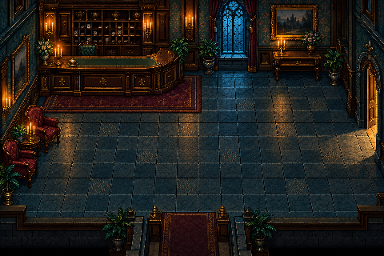
New candidate — g_kitchen_n0_e1_s1_w0_draft_v1.png
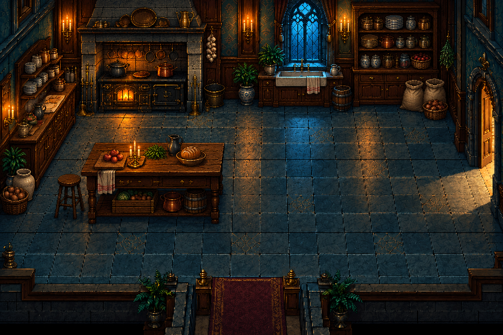
Room requirements and exact generation prompt
Rebuild the bar-like room as a genuine Victorian kitchen. Exactly TWO route openings: EAST/right doorway to dining, SOUTH/bottom centered internal threshold toward basement stairs. No west or north doorway. No bar counter, liquor display, velvet armchairs, bar rug or stools. Separate functional fixtures: cast-iron cooking range and stone hearth on the back-left wall; a basin sink beneath a clear back window; shelves holding ordinary crockery and provisions; a wooden preparation/work table offset left of center with space to approach its usable sides. Distinct pans, bread and sacks in restrained amounts. Leave a broad clear right-side lane and center-bottom access from east door to south threshold. Period materials, no modern appliances. Do not paint a second open stairwell or extra exits.
Use case: precise-object-edit. Produce ONE opaque 3:2 landscape background draft for a 2D Victorian mansion mystery game, ideally 1536x1024. The first reference is the edit target; preserve its illustrated pixel-art rendering, dark walnut, teal/slate stone and moonlit windows, brass and warm candlelight, crisp grouped pixel clusters and restrained material texture. Fixed elevated three-quarter orthographic cutaway room, horizontal back-wall lines, consistent depth, no wide-angle distortion or photographic/3D rendering. Readable adult-scale furniture in separate coherent functional clusters, clear paths and approach space. No characters, UI, text, compass labels, borders, floor arrows, bodies or baked evidence. No extra door-like arches, no melted ornament or fused furniture. Labels and contact metadata will be separate. This is a review candidate, not a runtime replacement.
ROOM: g_kitchen
Rebuild the bar-like room as a genuine Victorian kitchen. Exactly TWO route openings: EAST/right doorway to dining, SOUTH/bottom centered internal threshold toward basement stairs. No west or north doorway. No bar counter, liquor display, velvet armchairs, bar rug or stools. Separate functional fixtures: cast-iron cooking range and stone hearth on the back-left wall; a basin sink beneath a clear back window; shelves holding ordinary crockery and provisions; a wooden preparation/work table offset left of center with space to approach its usable sides. Distinct pans, bread and sacks in restrained amounts. Leave a broad clear right-side lane and center-bottom access from east door to south threshold. Period materials, no modern appliances. Do not paint a second open stairwell or extra exits.
Furniture IDs, contact landmarks, collision and occlusion are not calibrated for this draft. Door count is visually reviewed; final usability awaits game integration.
The approved kitchen includes a low work stool, tagged separately from tall bar stools.
u_main_stair — Upstairs landing with branching carpet
3 openings — NORTH: 0 · EAST: 1 · SOUTH: 1 · WEST: 1 · ART APPROVED / FIT PENDING
Current reference
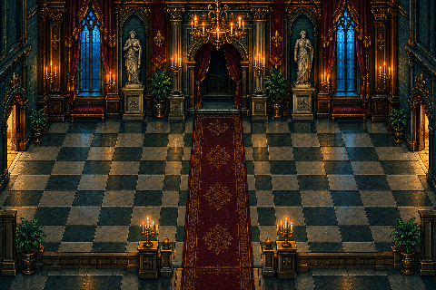
New candidate — u_main_stair_n0_e1_s1_w1_draft_v1.png
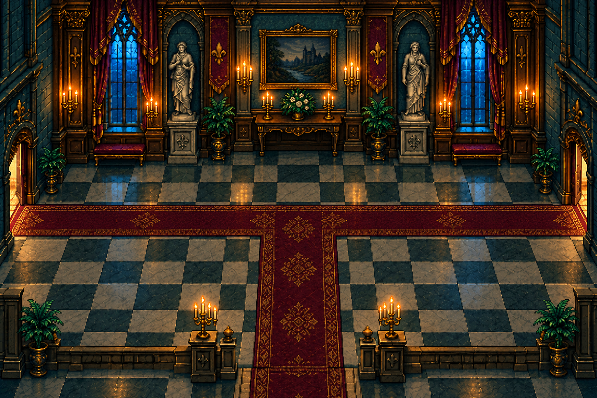
Room requirements and exact generation prompt
Upper-floor landing. Exactly THREE openings: SOUTH/BOTTOM CENTER arrival and stair return; WEST/LEFT doorway to bedroom; EAST/RIGHT doorway to study. NO door on the north/back wall: replace the obsolete northern doorway with continuous wall, framed art or a window, not a doorway-shaped niche. A burgundy carpet RUNNER leads inward from bottom center and BRANCHES LEFT AND RIGHT toward BOTH side doors as a clear T-shaped connected carpet path. The bottom entrance is clearly the arrival so a character holding Up continues into the room. Keep north route closed and actual walking areas clear; no runner continuing into a non-door wall. Simple coherent landing with sparse benches against walls. No new staircase on the north edge.
Use case: precise-object-edit. Produce ONE opaque 3:2 landscape background draft for a 2D Victorian mansion mystery game, ideally 1536x1024. The first reference is the edit target; preserve its illustrated pixel-art rendering, dark walnut, teal/slate stone and moonlit windows, brass and warm candlelight, crisp grouped pixel clusters and restrained material texture. Fixed elevated three-quarter orthographic cutaway room, horizontal back-wall lines, consistent depth, no wide-angle distortion or photographic/3D rendering. Readable adult-scale furniture in separate coherent functional clusters, clear paths and approach space. No characters, UI, text, compass labels, borders, floor arrows, bodies or baked evidence. No extra door-like arches, no melted ornament or fused furniture. Labels and contact metadata will be separate. This is a review candidate, not a runtime replacement.
ROOM: u_main_stair
Upper-floor landing. Exactly THREE openings: SOUTH/BOTTOM CENTER arrival and stair return; WEST/LEFT doorway to bedroom; EAST/RIGHT doorway to study. NO door on the north/back wall: replace the obsolete northern doorway with continuous wall, framed art or a window, not a doorway-shaped niche. A burgundy carpet RUNNER leads inward from bottom center and BRANCHES LEFT AND RIGHT toward BOTH side doors as a clear T-shaped connected carpet path. The bottom entrance is clearly the arrival so a character holding Up continues into the room. Keep north route closed and actual walking areas clear; no runner continuing into a non-door wall. Simple coherent landing with sparse benches against walls. No new staircase on the north edge.
Furniture IDs, contact landmarks, collision and occlusion are not calibrated for this draft. Door count is visually reviewed; final usability awaits game integration.
u_master — Bedroom with one usable doorway
1 openings — NORTH: 0 · EAST: 1 · SOUTH: 0 · WEST: 0 · ART APPROVED / FIT PENDING
Current reference
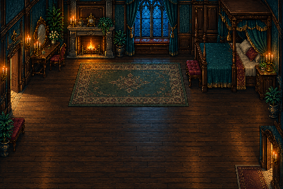
New candidate — u_master_n0_e1_s0_w0_draft_v1.png
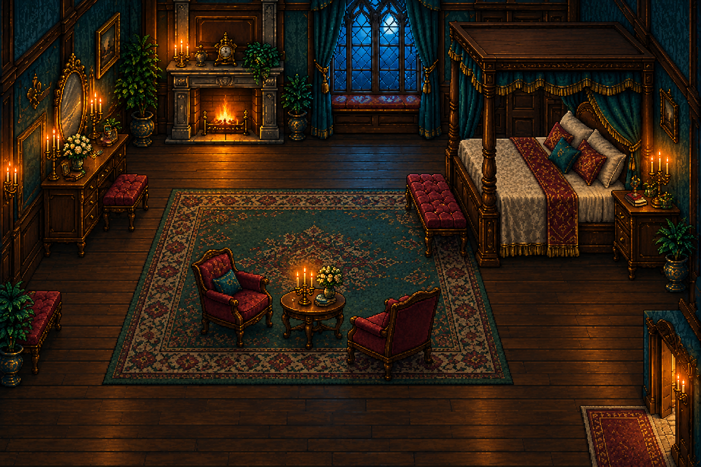
Room requirements and exact generation prompt
A cohesive adult master bedroom with exactly ONE doorway on EAST/right wall toward the lower half, matching the landing connection. Completely close the unused left/west opening with continuous wall; NO west, north, south doorway, no adjoining bathroom in this version. Improve the large purposeless lower space with a deliberate furniture arrangement: adult four-poster bed along right/back wall with logical headboard, bedside cabinet, dresser and a small upholstered bench at the bed foot; a woven rug organizes the central floor. Keep a walkable route from east door around bed and to dresser/fireplace/window. Avoid giant empty foreground, but leave enough floor for multiple adults and seated poses. No fused nightstands, impossible bed legs or blocked hearth.
Use case: precise-object-edit. Produce ONE opaque 3:2 landscape background draft for a 2D Victorian mansion mystery game, ideally 1536x1024. The first reference is the edit target; preserve its illustrated pixel-art rendering, dark walnut, teal/slate stone and moonlit windows, brass and warm candlelight, crisp grouped pixel clusters and restrained material texture. Fixed elevated three-quarter orthographic cutaway room, horizontal back-wall lines, consistent depth, no wide-angle distortion or photographic/3D rendering. Readable adult-scale furniture in separate coherent functional clusters, clear paths and approach space. No characters, UI, text, compass labels, borders, floor arrows, bodies or baked evidence. No extra door-like arches, no melted ornament or fused furniture. Labels and contact metadata will be separate. This is a review candidate, not a runtime replacement.
ROOM: u_master
A cohesive adult master bedroom with exactly ONE doorway on EAST/right wall toward the lower half, matching the landing connection. Completely close the unused left/west opening with continuous wall; NO west, north, south doorway, no adjoining bathroom in this version. Improve the large purposeless lower space with a deliberate furniture arrangement: adult four-poster bed along right/back wall with logical headboard, bedside cabinet, dresser and a small upholstered bench at the bed foot; a woven rug organizes the central floor. Keep a walkable route from east door around bed and to dresser/fireplace/window. Avoid giant empty foreground, but leave enough floor for multiple adults and seated poses. No fused nightstands, impossible bed legs or blocked hearth.
Furniture IDs, contact landmarks, collision and occlusion are not calibrated for this draft. Door count is visually reviewed; final usability awaits game integration.
u_study — Study without unused exits
1 openings — NORTH: 0 · EAST: 0 · SOUTH: 0 · WEST: 1 · ART APPROVED / FIT PENDING
Current reference
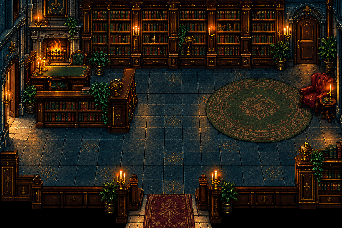
New candidate — u_study_n0_e0_s0_w1_draft_v2.png
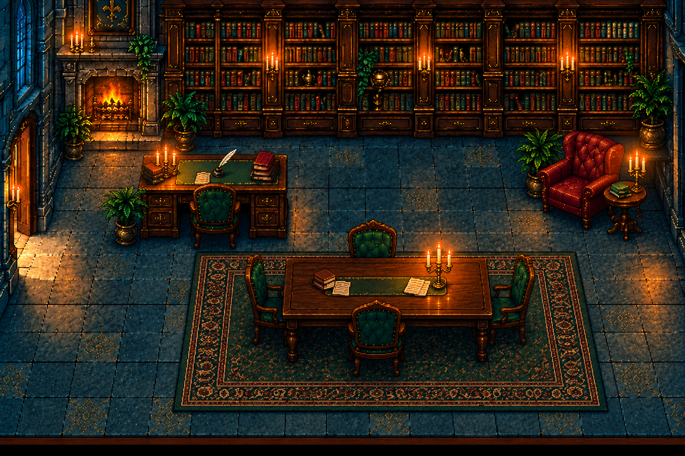
Room requirements and exact generation prompt
User revision: furnish the formerly empty middle/lower area with a substantial table, four chairs and an aligned rug, retaining clear door and furniture access.
Edit the supplied study draft, retaining its cohesive illustrated pixel-art rendering, fixed elevated three-quarter orthographic cutaway, exact 3:2 canvas, period materials and lighting. Preserve exactly ONE doorway on WEST/left wall; no north, east or south openings. Keep back bookshelves, fireplace and clear wall window. The user dislikes the misplaced isolated circular rug and the vast unused bottom floor.
Recompose the room into TWO functional zones with adult-scale distinct furniture. Keep a writing desk and its separate desk chair in the left/back half, leaving the west doorway approach open. In the formerly empty middle/lower area, add a substantial rectangular wooden discussion/document table with FOUR clearly separate padded wooden chairs facing its edges, with usable seating gaps and believable legs/backs. Place a properly fitted RECTANGULAR rug underneath this table and its chairs, aligned to the furniture. REMOVE the old isolated round rug. The conversation/document area should occupy the lower-middle floor with enough space for characters to approach all sides; no tiny token table in a giant empty hall. The existing right reading chair and side table may be repositioned into a coherent small reading corner, clear of the new group and bookshelf approach. A few writing papers and a closed book can rest on the new table; no readable text, baked evidence, faces or people. Make this a furnished private study, not a library warehouse or a dining room; keep a distinct writing desk and research/conversation table. Preserve a readable path from the single west doorway around both furniture zones. No giant empty foreground, no foreground wall hiding furniture, no fused objects. Output one opaque 1536x1024 draft.
Furniture IDs, contact landmarks, collision and occlusion are not calibrated for this draft. Door count is visually reviewed; final usability awaits game integration.
b_store — Filled basement storage
1 openings — NORTH: 1 · EAST: 0 · SOUTH: 0 · WEST: 0 · ART APPROVED / FIT PENDING
Current reference
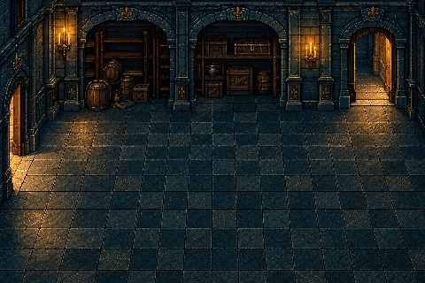
New candidate — b_store_n1_e0_s0_w0_draft_v1.png
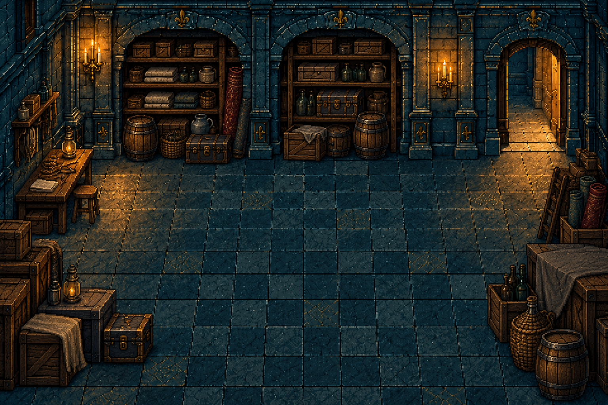
Room requirements and exact generation prompt
A believable occupied basement storage room. Exactly ONE return doorway on NORTH/back wall on the right half, toward basement stairs. Remove the old unused west/left doorway: continuous stone wall there, no arch or fake opening. Fill wall storage bays with practical wooden shelves of folded linens, boxes and jars, stacked crates, a few barrels, old trunks and rolled rugs. Add a small repair/work surface against a wall. Store items in separate orderly clusters with plausible supports, not random duplicated rubble. Preserve an unmistakable clear central aisle from north doorway into lower room, access to shelf fronts/trunks and room for kneeling inspection. No east, south, west exits. No furniture blocking the single door; no absurdly empty warehouse floor. Maintain a cool cellar palette with restrained warm wall lamps.
Use case: precise-object-edit. Produce ONE opaque 3:2 landscape background draft for a 2D Victorian mansion mystery game, ideally 1536x1024. The first reference is the edit target; preserve its illustrated pixel-art rendering, dark walnut, teal/slate stone and moonlit windows, brass and warm candlelight, crisp grouped pixel clusters and restrained material texture. Fixed elevated three-quarter orthographic cutaway room, horizontal back-wall lines, consistent depth, no wide-angle distortion or photographic/3D rendering. Readable adult-scale furniture in separate coherent functional clusters, clear paths and approach space. No characters, UI, text, compass labels, borders, floor arrows, bodies or baked evidence. No extra door-like arches, no melted ornament or fused furniture. Labels and contact metadata will be separate. This is a review candidate, not a runtime replacement.
ROOM: b_store
A believable occupied basement storage room. Exactly ONE return doorway on NORTH/back wall on the right half, toward basement stairs. Remove the old unused west/left doorway: continuous stone wall there, no arch or fake opening. Fill wall storage bays with practical wooden shelves of folded linens, boxes and jars, stacked crates, a few barrels, old trunks and rolled rugs. Add a small repair/work surface against a wall. Store items in separate orderly clusters with plausible supports, not random duplicated rubble. Preserve an unmistakable clear central aisle from north doorway into lower room, access to shelf fronts/trunks and room for kneeling inspection. No east, south, west exits. No furniture blocking the single door; no absurdly empty warehouse floor. Maintain a cool cellar palette with restrained warm wall lamps.
Furniture IDs, contact landmarks, collision and occlusion are not calibrated for this draft. Door count is visually reviewed; final usability awaits game integration.
future_bar — Future bar with usable stools
2 openings — NORTH: 0 · EAST: 1 · SOUTH: 1 · WEST: 0 · ART APPROVED / FIT PENDING
Current referenceNew candidate — future_bar_n0_e1_s1_w0_draft_v2.png
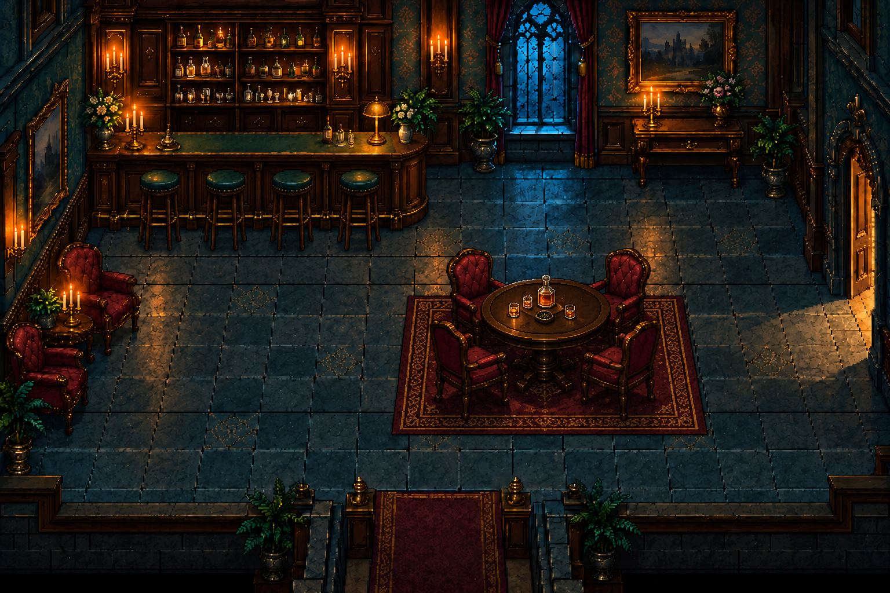
Room requirements and exact generation prompt
User revision: furnish the formerly empty middle/lower area with a substantial table, four chairs and an aligned rug, retaining clear door and furniture access.
Edit this supplied bar draft. Preserve the exact pixel-art rendering, fixed elevated three-quarter view, 3:2 canvas, architecture, lighting, top-left bar counter, FOUR clearly separated north-facing bar stools and existing EAST doorway and SOUTH centered threshold. Do not add any other door. Keep the back window clear.
The user finds the middle/lower floor too empty. Furnish that area as a real social space: add one substantial round dark-wood pub/card table in the middle-right/lower-center of the room, with FOUR separate adult-sized upholstered wooden chairs arranged around it, facing the table, with distinguishable seats/backs/legs and usable gaps. A restrained decanter/glasses grouping can sit on the tabletop. Ground this group on a modest fitted rectangular patterned rug, aligned with the table rather than floating elsewhere. The furniture group must occupy a meaningful portion of the formerly empty middle/lower floor, not a tiny token object. Preserve an open aisle behind all four bar stools so people can mount/dismount, and a readable route from the east door around the table to the south exit. Preserve the existing left conversation chairs. Avoid cramming furniture, fused legs, blocked doors, imaginary exits or a vast unused foreground. No people, labels, UI or text. One opaque 1536x1024 review draft; do not change anything else.
Furniture IDs, contact landmarks, collision and occlusion are not calibrated for this draft. Door count is visually reviewed; final usability awaits game integration.
Four north-facing public-side stools. This is a future-room asset concept; it does not add a room to the compact mansion.
Review room IDs individually: approve, request a specific change, or reject. Artwork approval is separate from runtime fit and integration. All nine current artworks are approved; eight replacements are integrated. General furniture staging remains provisional.